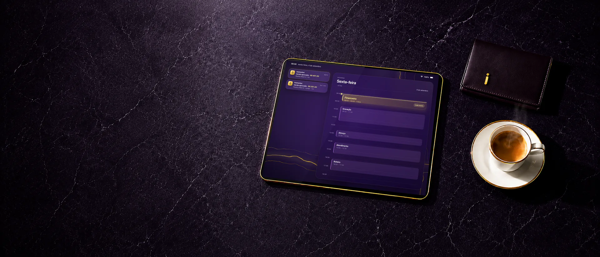
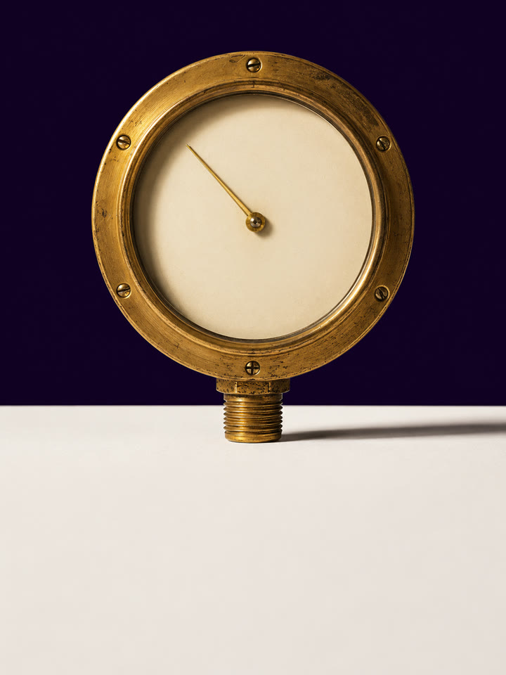
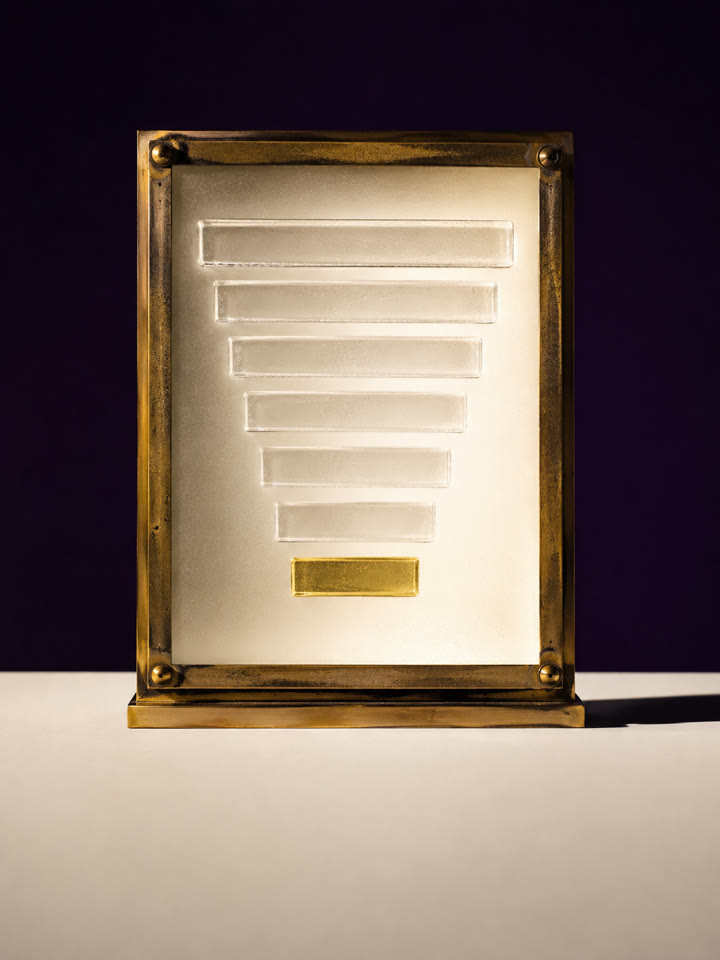
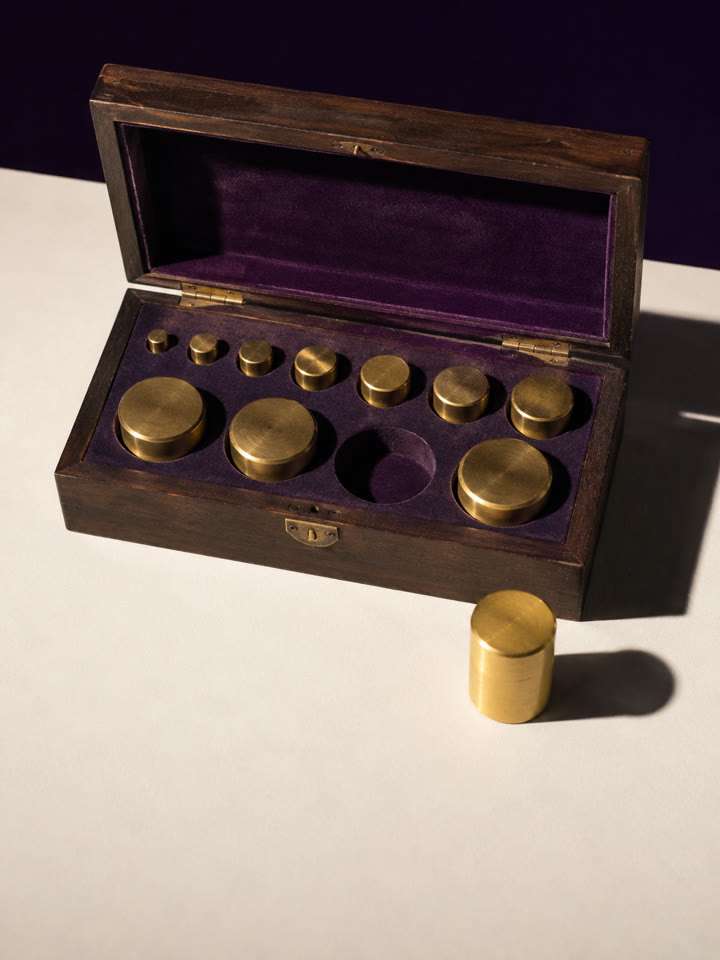
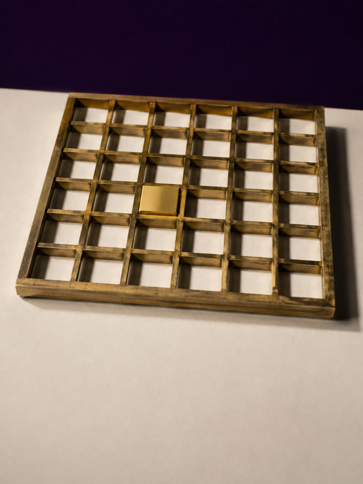
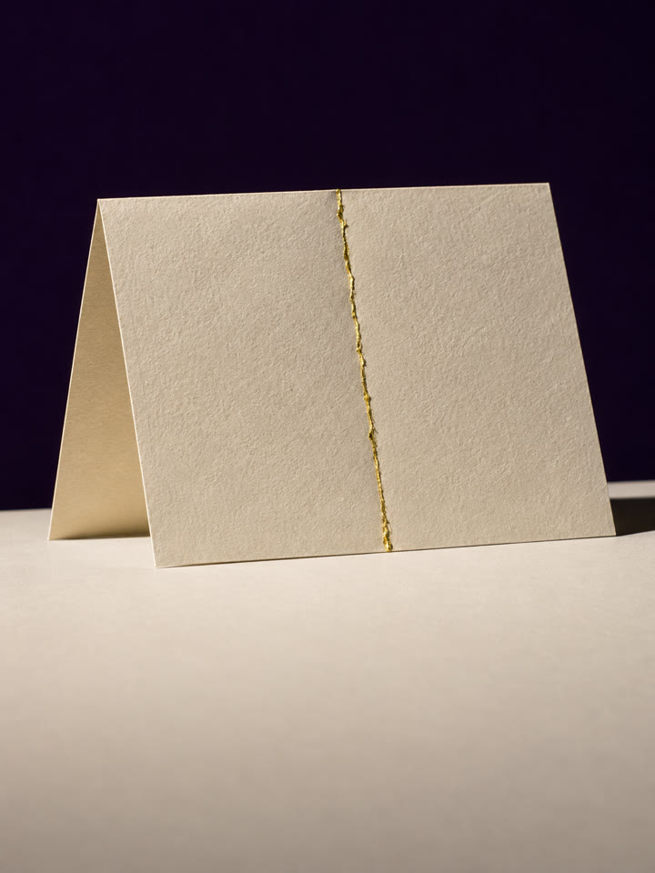
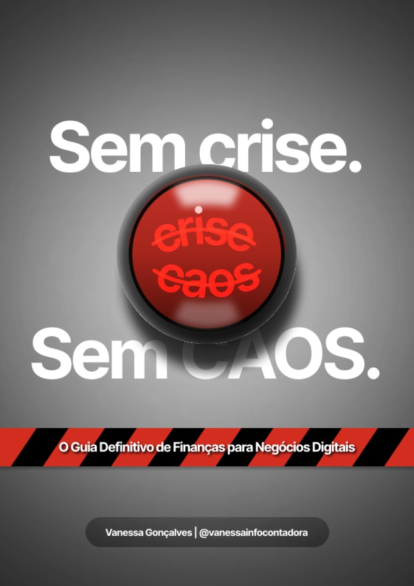
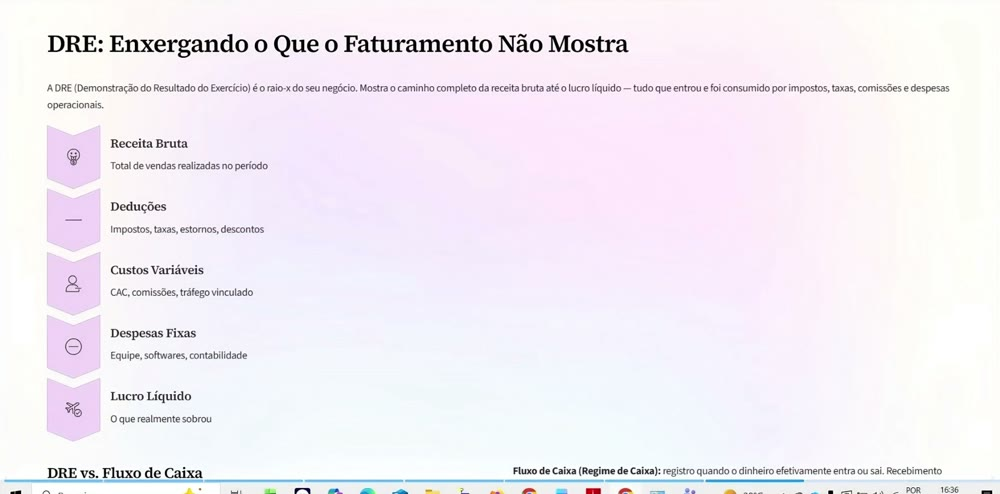
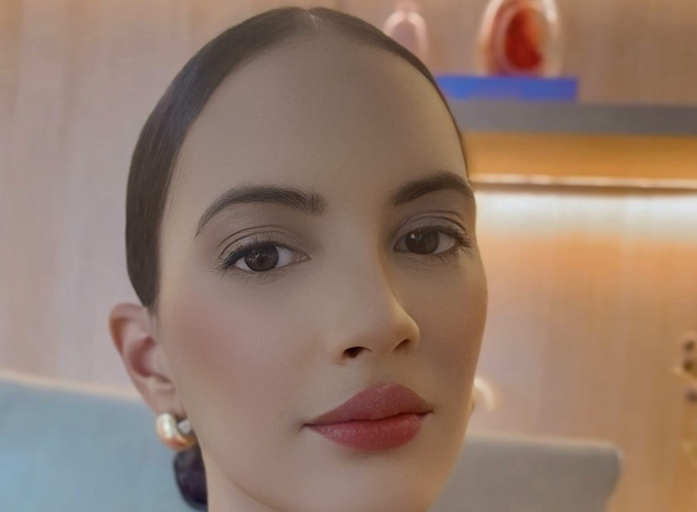

Toda sexta, às oito,
o dinheiro se explica.
A Vanessa faz a dela toda sexta, das oito às nove. Role devagar: a tela mostra o que ela olha nessa hora, e por quais paradas o dinheiro passa antes de chegar na última linha. O imposto é uma delas.
Antes de gravar, antes de atender: uma hora com o dinheiro.
Entrou o mês inteiro. O que ficou é essa faixa fina.
O mesmo faturamento, lido linha por linha. Agora dá para decidir.
Uma hora por semana, na sua mão.
O lucro à vista.
O botão abre a calculadora desta página. Você vê o seu número antes de decidir qualquer coisa.
Cenário ilustrativo. Os números da tela existem para explicar a leitura, não são resultado de aluno nem previsão para o seu negócio. O curso entrega as seis aulas e a planilha Raio-X do Lucro.
O faturamento entra. O lucro escapa no caminho.
O mês fecha faturando bem. Aí você olha o que sobrou, e não está lá.
O dinheiro não some na sua planilha nem no imposto. Some antes, no percurso entre a venda e a sua conta, onde ele para seis vezes e ninguém anota. O curso abre essas seis paradas, uma a uma, e mostra quanto fica em cada uma.
Você sabe que sobra pouco. Só não sabe por onde.
Quanto sobrou
no seu último mês?
Sete campos. Se você souber os sete, a conta fecha em dez segundos e você vê a sua margem. Se não souber, é essa a resposta — e ela vale mais que qualquer número.
Cada campo começa em “Não sei”. Deixe assim o que você realmente não sabe — é essa a foto do problema.
Esta conta é a margem do seu mês, não uma promessa. Nada aqui estima ganho nem prevê resultado: o número que vale é o do seu mês, e ele aparece quando você o preenche no Raio-X do Lucro.
Você enxerga o percurso. Depois lê a linha que responde.
O Lucro à Vista são 6 aulas gravadas, curtas, com acesso integral desde a compra. Elas não montam um cronograma: montam a sua rotina financeira. A Vanessa faz a dela toda sexta-feira, das 8 às 9 da manhã, e é essa rotina que você sai sabendo montar — de 15 minutos a 1 hora por semana. Cada aula aponta uma parada do dinheiro, mostra onde ela aparece no seu extrato e entrega a etapa do método que a resolve.
O seu mês aberto.
A aula não é para assistir de braços cruzados: você abre o extrato do último mês do lado e pausa quando precisar preencher.
A parada nomeada.
Cada aula aponta uma parada do dinheiro e mostra onde ela aparece no seu extrato.
O instrumento em uso.
O Raio-X do Lucro preenchido na tela, com um mês real, antes de você preencher o seu.
A etapa com ponto de chegada.
Cada etapa tem um critério de conclusão. Você sabe quando terminou, e de onde recomeçar na semana em que empurrar a sexta-feira.
A próxima parada.
A aula termina apontando a parada seguinte. Seis aulas, até a última linha.
Seis aulas, dois instrumentos.
Mais o seu mês na tela.
São as peças que acendem o percurso: cada parada do diagnóstico vem com a etapa que a nomeia. Você preenche com os seus dados e lê no mesmo dia.
Passe o mouse em cada uma (ou toque) e veja o que ela mostra.





Cabem numa sexta-feira das 8 às 9 da manhã, que é a rotina que a própria Vanessa mantém.
As seis aulas trazem dois instrumentos dentro: o Raio-X do Lucro, avaliado em R$ 67, e o Roteiro da Conversa com o Contador, avaliado em R$ 27.
O que cabe numa sexta-feira
decide a sua segunda.
Cada aula acende uma parte do percurso. Juntas, elas mostram o caminho do dinheiro da venda até a linha da lucratividade.
Duas empresas, o mesmo mês.
Uma olhou os números. A outra, não.
Empresa A
Empresa B
Exemplo didático usado na Aula 5 — não é o resultado de um cliente real.
É para você se
- Vende pela internet (infoproduto, agência, coprodução, serviço) e o dinheiro entra sem que você saiba quanto ficou.
- É quem decide o preço, a retirada e o corte. Não existe outra pessoa para assinar por você.
- É MEI ou empresa pequena, com o dinheiro das vendas ainda caindo misturado na conta pessoal.
- Tem uma hora por semana para sentar com o próprio número — e entende que é a hora que decide o que sobra do resto.
Não é para você se
- Procura uma forma de pagar menos imposto sem mexer no que causa o problema.
- Quer que alguém resolva sem que você olhe o próprio extrato.
- Espera que este material prometa aumento de faturamento ou de lucro.
- Quer um arquivo pronto para baixar e nunca abrir.
- Não tem uma hora por semana para olhar o próprio extrato — sem essa hora, nenhum material resolve.
43% de lucro no papel, um relatório correto e R$ 1.600 em caixa. A conta não fechava com a sensação, e ele achava que era o imposto. A linha que ninguém tinha lido era a da retirada.
Faturamento alto, margem quase nula e a decisão de dissolver a sociedade já tomada. A conversa não começou por motivação: começou pela linha errada que ela estava olhando. Ela não fechou.
Casos reais da carteira da expert, anonimizados. Ilustrativos de método, nunca previsão de resultado.
Tudo o que entra, e o que vale.
| Curso Lucro à Vista · 6 aulas, as 5 etapas do método | R$ 197 |
| O Raio-X do Lucro · a planilha usada por dentro das aulas | R$ 67 |
| Roteiro da Conversa com o Contador · PDF, anexo à Aula 5 | R$ 27 |
| O livro “Sem Crise Sem Caos” · digital e completo | R$ 37 |
| Área de membros · dúvidas com resposta em 48h úteis | R$ 47 |
| Valor total | R$ 375 |
| Você investe hoje | R$ 97 |
Você acessa, assiste à primeira aula e abre o Raio-X do Lucro. Se não fizer sentido, devolvemos o seu dinheiro, sem você justificar nada.
“Sem Crise Sem Caos”,
o livro por dentro.
São dois produtos próprios, cada um com preço próprio: R$ 47 o livro, que continua sendo vendido assim. O que esta oferta faz é juntá-lo ao curso numa compra só.
O livro nasceu antes do curso e registra o método em prosa; a planilha é onde ele acontece. Um explica com calma, a outra mede o seu mês. E conversam entre si.


o livro · o instrumento
Livro digital completo · produto próprio, R$ 37
Sem Crise Sem Caos
Finanças para quem vive do digital, com calma e por escrito
- As seis paradas do dinheiro, uma por capítulo, na ordem em que o real passa por elas
- O prejuízo silencioso: o sócio invisível chamado decisão errada, que retira do caixa todo mês e não aparece em relatório nenhum
- A retirada sem regra que faz o dono tirar pelo saldo que apareceu na tela, sem valor definido e sem data
- Um critério de conclusão ao fim de cada etapa, para você saber quando terminou
- O mapa da separação, com o que é seu, o que é da empresa e a retirada definida antes
- As cinco etapas do método que o livro percorre em prosa, para ler no domingo
O instrumento · planilha do método
O Raio-X do Lucro
Onde o método acontece, linha a linha
- O mês montado etapa a etapa, no formato “o que entrou” contra “o que sobrou”
- As categorias que estavam no seu extrato o tempo todo, e que ninguém tinha somado
- As cinco etapas do método: o registro, a separação, a margem, a reserva e a linha do lucro
- A virada: separar o que era dele do que era da empresa e ler a linha da retirada, que nenhuma coluna a mais teria mostrado
“O que está matando o seu negócio é o próprio sócio, e não efetivamente os impostos.”
O primeiro é o livro, para ler com calma longe da tela do mês. O segundo é a planilha, onde o mês acontece. O livro te faz pensar; a planilha te faz preencher.
Os dois entram na sua área junto com o curso, no mesmo minuto, e ficam com você.
Vanessa Gonçalves
Contadora · CRC SE-000715/O
Em 2015 ela apostou numa franquia de recuperação tributária e a trouxe para Aracaju. A franquia não fechou um único contrato. Sobrou uma dívida grande e um recomeço do zero, e as palavras são dela: “Tivemos que dormir no chão.” De 2015 a 2022 foi assim.
“Foi só quando a gente resolveu apostar na contabilidade que as coisas começaram a andar.” Ela levou a carteira para os negócios digitais, e é de lá que vêm as leituras desta página. É por isso que ela conhece as paradas do dinheiro digital, que são diferentes das paradas do comércio da esquina.
Empreender não é uma linha reta.
86% · das pessoas pesquisam o produtor antes de comprar um infoproduto (CNDL/SPC Brasil). O registro e o CNPJ são públicos: confira os dois antes de decidir.

Isso não está de graça no YouTube?
Não sou de números. Vou dar conta?
Eu já pago um contador. Isso serve para mim?
Depois dos R$ 97 vem alguma coisa cara?
O mês inteiro.
A última linha lida.
Você chegou sabendo o que já sabia: o dinheiro entra e você não sabe quanto fica. A diferença é que agora tem nome.
6 aulas, o Raio-X do Lucro, o Roteiro da Conversa com o Contador e o livro Sem Crise Sem Caos por R$ 97 à vista · 7 dias para devolver, sem justificar · acesso em 1 minuto
Conteúdo educativo de contabilidade e finanças. Não constitui recomendação de investimento (CVM) nem consultoria contábil individualizada. Resultados dependem da aplicação de cada pessoa ao próprio negócio. Casos citados são reais, anonimizados e ilustrativos de método, nunca previsão de resultado (NBC PG 01).